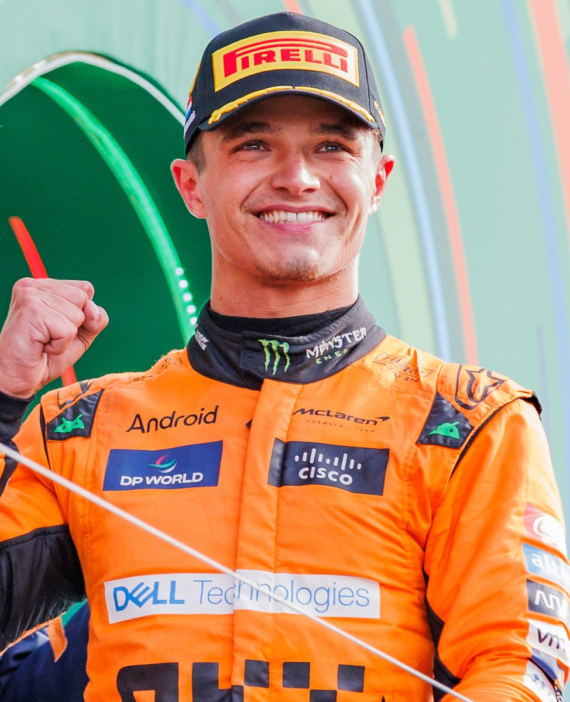

Max Verstappen Wins Las Vegas Grand Prix as Russell Crash Sparks Post-Race Feud
Red Bull's four-time champion edges McLaren duo Norris and Piastri after late Mercedes drama settles a frantic 50-lap duel.

What happened
Max Verstappen captured victory at the Las Vegas Grand Prix, withstanding relentless slipstreaming battles under the Nevada floodlights to finish ahead of McLaren teammates Lando Norris and Oscar Piastri. Red Bull’s four-time world champion started from pole position after Mercedes driver Andrea Kimi Antonelli served a five-place grid penalty for power unit component changes.
Verstappen traded the lead across 50 laps with Mercedes' George Russell before Russell locked his tyres and collided with the barrier with two laps remaining while attempting to overtake Antonelli for second place. Russell dropped to ninth, while Antonelli slipped to fourth on the penultimate lap, allowing Norris and Piastri to secure a double podium for McLaren.

Why it is being talked about
The aftermath highlighted an escalated rivalry between Verstappen and Russell. In Saturday's third practice session, the pair made wheel-to-wheel contact entering Turn 14, prompting Verstappen to make a hand gesture and receiving an official reprimand. Russell subsequently told reporters that Verstappen "acts like he is better than everyone else" and needed to be resisted.
When asked at the post-race press conference about Russell’s late crash, Verstappen remarked that his day became better after seeing the incident and described it as "karma," prompting laughter from Norris and Piastri. Red Bull's official media channels followed by posting a podium image of Verstappen captioned, "Better than everyone else". The race also brought intra-team friction at Ferrari, where Charles Leclerc was handed a 10-second penalty for spinning teammate Lewis Hamilton.
Key facts and numbers

- 0.639 seconds: Verstappen's margin of victory over second-placed Norris at the chequered flag.
- 35: The total number of lead changes recorded over 50 laps around the Las Vegas Strip Circuit.
- 14 positions gained: Piastri fought his way up from 17th on the starting grid to finish third.
- 75: Career Formula 1 race victories for Verstappen following his win in Nevada.
- 402 to 304: World championship points standing, with Antonelli leading second-placed Verstappen.
What happens next
The Formula 1 championship heads into its final two rounds of the 2026 calendar. While Antonelli clinched the drivers' title earlier in November, the Las Vegas result consolidates Verstappen's second place in the standings with 304 points, extending his advantage over Ferrari's Hamilton (267 points) and leaving Russell and Norris tied on 264 points.